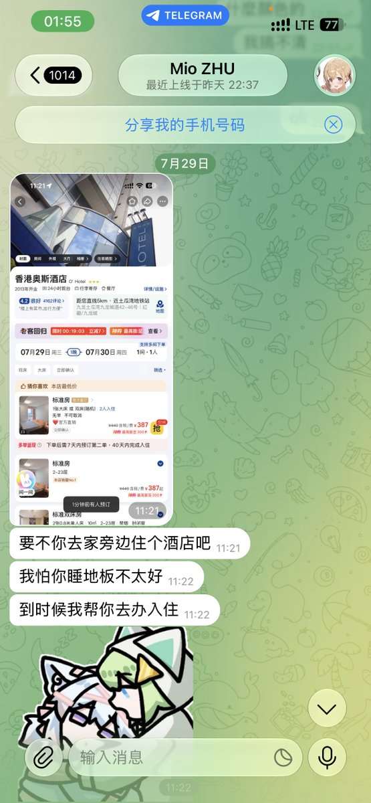
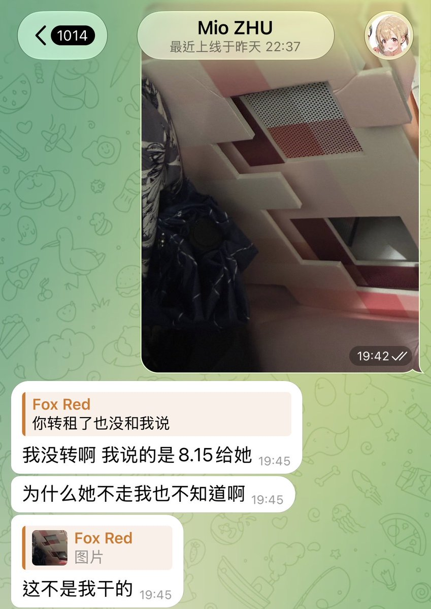

@ChaCattleya 对于夹腿自慰这件事我真的非常抱歉,我也很抱歉因为平时不怎么和阁下聊天当时我告诉的人和您说了您才知道
但我当天就和在场的人都说了,我当时认为的新租户也没有意见,很抱歉在知道8.15才正式转租以后忘了和您以及小宫说

但我当天就和在场的人都说了,我当时认为的新租户也没有意见,很抱歉在知道8.15才正式转租以后忘了和您以及小宫说


我承认洗好澡坐回床上之后因为习惯有夹腿自慰
但我想说我真的没有觉得理所当然,从头到尾都很抱歉
我夹腿反应过来不对之后立马停止并且到厕所把一次性贴身衣物都丢弃了,全程没有污染到任何物品,并且出于不应该瞒着的想法和当时在房间内的諏訪 チナミ以及TJK说了,如果我不说也没人会知道 https://t.co/sdev5y9gJY https://t.co/F8ZSxMi8dg
但我想说我真的没有觉得理所当然,从头到尾都很抱歉
我夹腿反应过来不对之后立马停止并且到厕所把一次性贴身衣物都丢弃了,全程没有污染到任何物品,并且出于不应该瞒着的想法和当时在房间内的諏訪 チナミ以及TJK说了,如果我不说也没人会知道 https://t.co/sdev5y9gJY https://t.co/F8ZSxMi8dg